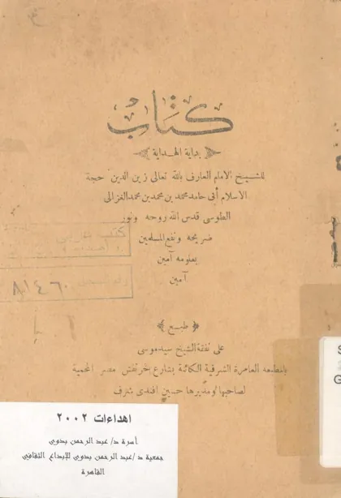

بداية الهداية
Bidayatul Hidayah
Baca Bidayatul Hidayah (بداية الهداية) karya Imam al-Ghazali secara gratis di Maktabah Ilmu: teks Arab, Indonesia (sebagian terjemah dibuat AI). Tanpa daftar, tanpa iklan.
Buka kitab iniLihat lemari ilmuDaftar isi
- بسم الله الرحمن الرحيم
- القسم الأول
- توطئة
- فصل في آداب الاستيقاظ من النوم
- باب آداب دخول الخلاء
- باب آداب الوضوء
- آداب الغسل
- آداب التيمم
- آداب دخول المسجد
- آداب ما بعد طلوع الشمس إلى الزوال
- آداب الاستعداد لسائر الصلوات
- آداب النوم
- آداب الإمامة والقدوة
- آداب الصلاة
- آداب الإمامة والقدوة
- آداب الجمعة
- آداب الصيام
- القسم الثاني
- توطئة
- آداب العين
- آداب الأذن
- الأول الكذب
- الثاني الخلف في الوعد
- الثالث الغيبة
- الرابع المراء والجدال ومناقشة الناس في الكلام
- الخامس تزكية النفس
- السابع الدعاء على الخلق
- الثامن المزاح والسخرية والاستهزاء بالناس
- آداب البطن
- آداب الفرج
- آداب اليدين
- آداب الرجلين
- القول في معاصى القلب
- الحسد
- الرياء
- الرياء
- العجب والكبر والفخر
- حديث جامع في معاصي القلب
- القسم الثالث
- آداب العالم
- آداب المتعلم
- آداب الولد مع الوالدين
- أصناف الناس في العلاقة بالمرء
- آداب العلاقة بالعوام المجهولين
- آداب العلاقة بالاخوان والأصدقاء
- شروط الصحبة والصداقة
- الوظيفة الثانية
- آداب العلاقة بالمعارف